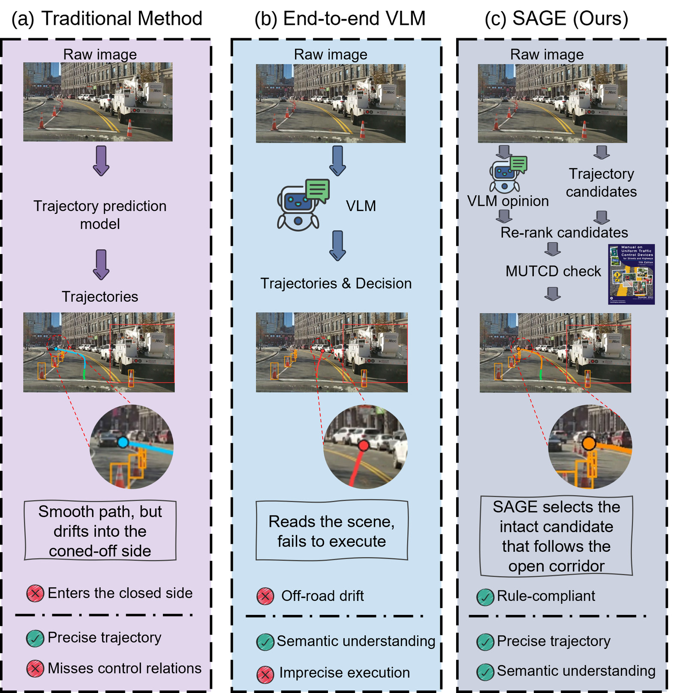
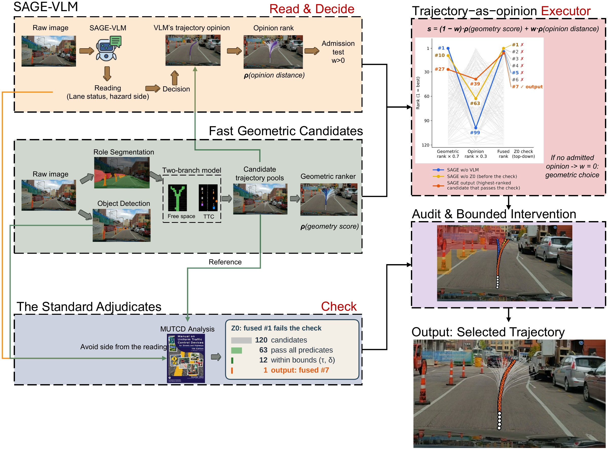
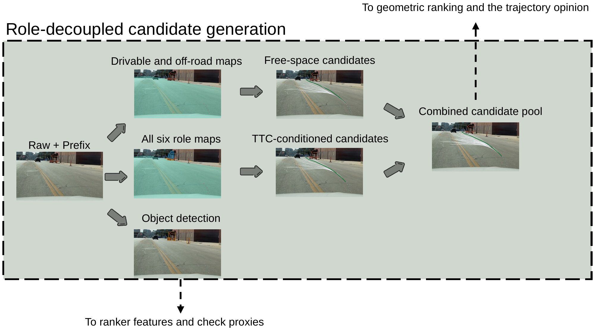
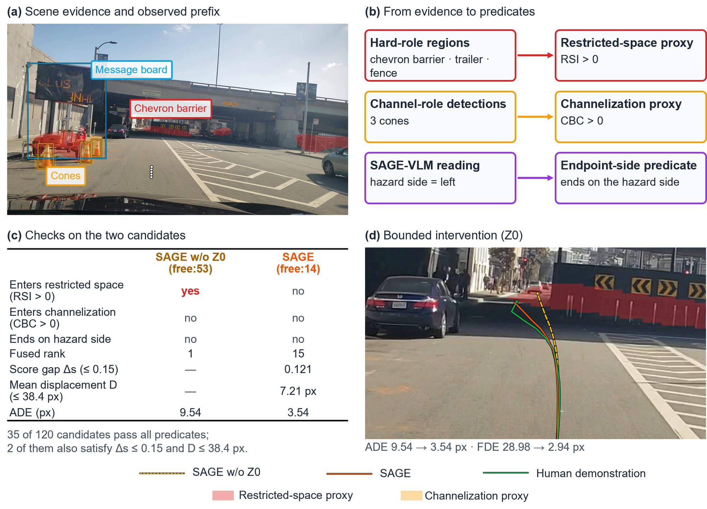
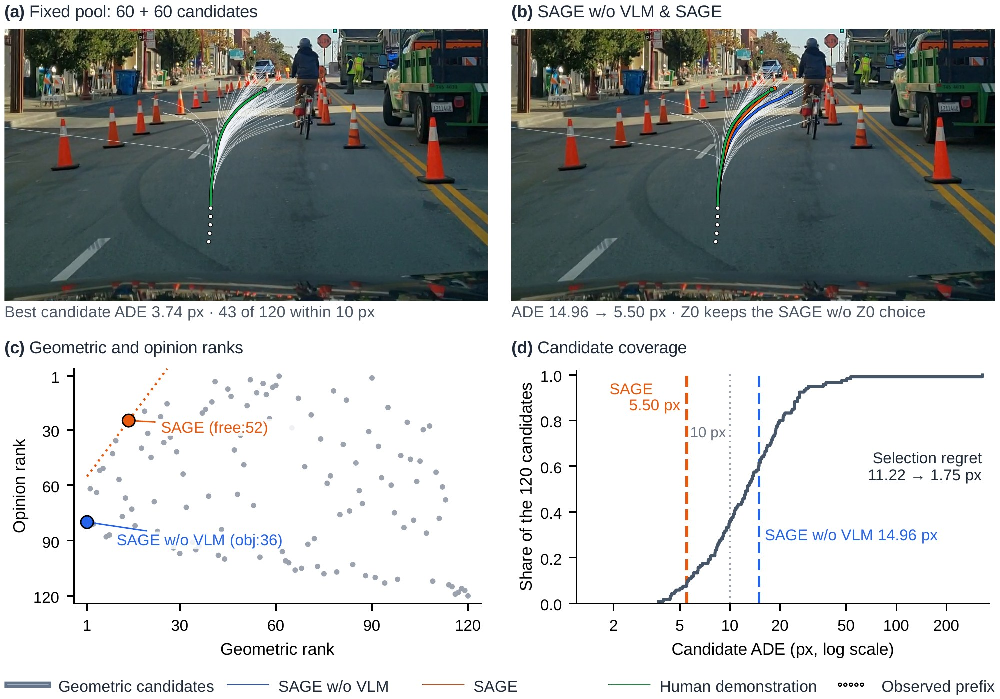
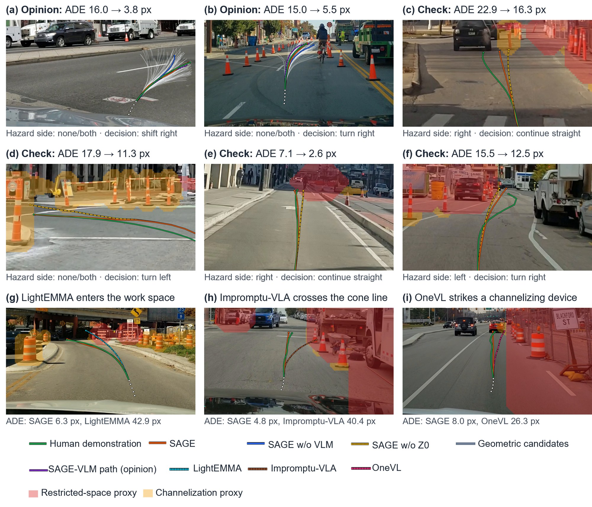
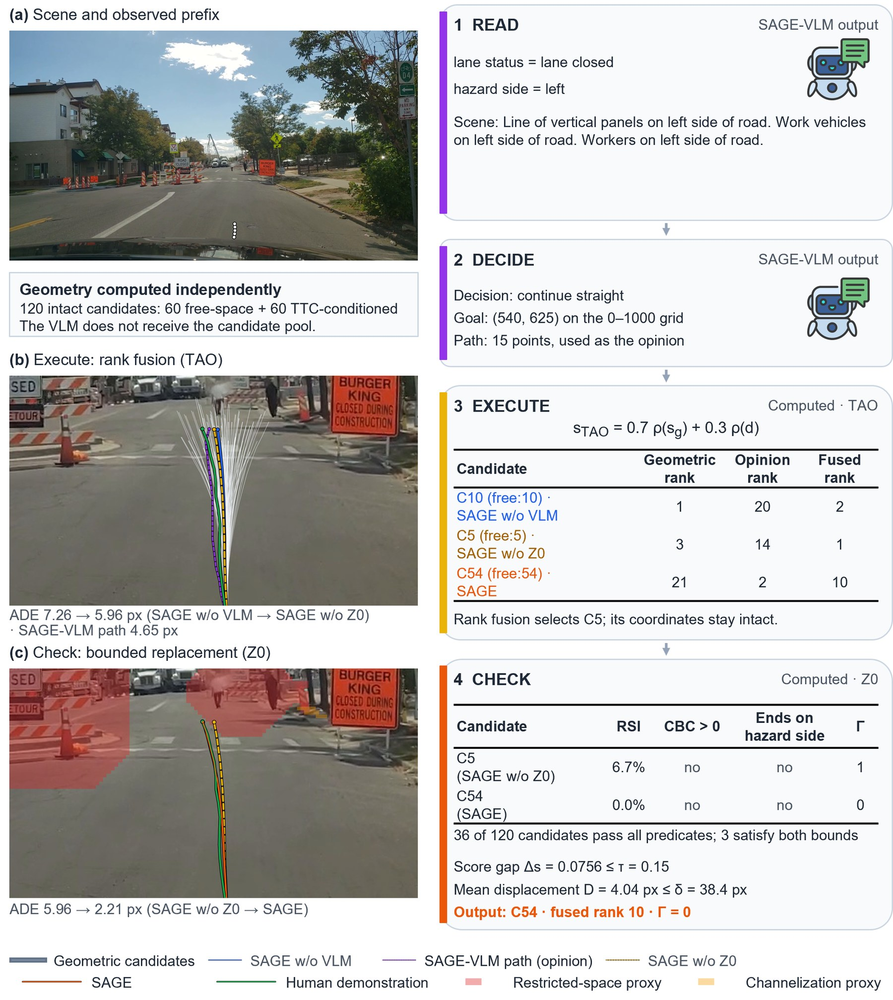

A Hybrid Vision–Language and Geometry Framework for Work-Zone Pathway Prediction under Temporary Traffic Control
University of Wisconsin–Madison
*Corresponding author

Selection is the bottleneck. The 120 geometric candidates contain a path within 10 px of the human demonstration in 87% of episodes, yet selection regret accounts for 53% of the geometric ranker's error.
Trajectory as opinion. SAGE-VLM's trajectory ranks the intact candidates by distance, and rank fusion with the geometric score improves all four tested generator–selector combinations.
Read the zone, then check the path. MUTCD-structured supervision has SAGE-VLM state the lane status and hazard side before its decision; MUTCD-derived predicates drive a bounded intervention that cuts hard-constraint violations by 37%.
Accurate with a faster VLM. SAGE lowers ADE by 8.3% and FDE by 12.0% relative to the geometric ranker, is comparable to OneVL in accuracy with a VLM that answers in 3.06 s against 3.75 s, and outperforms four other adapted driving VLMs in displacement error and safety measures.
Read, decide, execute, check: four steps meet in one shared pool of candidate paths. Geometry builds every path; SAGE-VLM and the MUTCD predicates choose among them.

SAGE-VLM first states the lane status and the hazard side, the side from which traffic is redirected.
reading + decision 0.73 sIt then gives a passage decision, a goal, and a 15-point trajectory, which SAGE uses only as an opinion.
goal 0.92 s · path 3.04 sEach of the 120 RD-YNet candidates gets a geometric rank and an opinion rank from its distance to the SAGE-VLM path.
60 + 60 candidatesZ0 may replace a failing choice with the highest-ranked passing candidate within Δs ≤ 0.15 and D ≤ 38.4 px.
no trainable parameterss(j) = 0.7 · ρ(geometric score) + 0.3 · ρ(distance to the SAGE-VLM path) → output: one of the 120 intact candidates



| MUTCD (11th ed.) | Requirement (paraphrased) | Predicate on every candidate |
|---|---|---|
| §6B.06 ¶02 | The work space is the portion of the highway closed to road users. | RSI > 0: the path enters the restricted-space proxy. |
| §6B.05 ¶02 | Road users whose normal path must be redirected shall be directed to a new path with channelizing devices. | CBC > 0: the path enters the channelization proxy. |
| §6L.06 ¶17, ¶19 | An arrow board in arrow or chevron mode is used only for lane closures; with the channelizing line it marks the closed side. | The path ends on the hazard side stated in SAGE-VLM's reading. |
The predicates are image-space proxies of the provisions; determining regulatory compliance requires a separate engineering assessment.
Four ROADWork validation frames, step by step. Every path, rank, reading, and check in the videos is a stored output of the evaluated system.
Each path mapped onto the road with the paper's device-anchored metric frame: MUTCD drums (36 in, 0.91 m) calibrate the camera height and horizon of each recording with enough drums, the others use the median calibration, and a flat-ground pinhole model gives metres ahead and to the side.
Measures follow the paper's definitions. Lateral error compares each path with the demonstration at the same image row (the same distance ahead) within rows at least 80 px below the horizon. Lane tolerance holds when the maximum lateral error stays within 1.83 m, half of a 12-ft lane. Clearance is the gap between the 1.07-m half-width footprint of the AASHTO passenger car and a detected object at its ground-contact row; a value below −0.30 m counts as a strike.
2,306 ROADWork validation episodes from 187 recordings.
| Method | ADEpx ↓ | FDEpx ↓ | Lat. err.m ↓ | Lane miss% ↓ | Collision% ↓ | Hard viol.% ↓ | Score0–100 ↑ | Hazard side% ↓ |
|---|---|---|---|---|---|---|---|---|
| Path models without language | ||||||||
| Constant-velocity extrapolation | 21.51 | 59.76 | 0.174 | 6.68 | 2.06 | 6.57 | 93.1 | – |
| Generic planner (one Y-Net branch) | 14.06 | 35.08 | 0.133 | 3.78 | 1.01 | 2.40 | 95.9 | 1.16 |
| ROADWork released Y-Net | 38.58 | 75.99 | 0.220 | 6.38 | 1.49 | 3.45 | 86.9 | 4.17 |
| VLM / VLA paths executed directly | ||||||||
| Qwen2.5-VL-7B (zero-shot) | 25.81 | 64.90 | 0.196 | 6.99 | 2.01 | 6.66 | 91.8 | 0.54 |
| Senna (ROADWork LoRA) | 18.73 | 54.24 | 0.145 | 5.54 | 1.88 | 6.36 | 93.3 | 1.24 |
| Impromptu-VLA (ROADWork LoRA) | 17.26 | 52.24 | 0.126 | 4.51 | 1.44 | 5.18 | 94.2 | 1.85 |
| LightEMMA† (ROADWork LoRA) | 14.42 | 47.55 | 0.104 | 4.21 | 1.34 | 5.08 | 94.5 | 2.78 |
| OpenEMMA† (ROADWork LoRA) | 14.45 | 47.50 | 0.107 | 4.35 | 1.15 | 5.05 | 94.6 | 2.24 |
| OneVL (authors' ROADWork checkpoint) | 12.74 | 29.02 | 0.114 | 3.26 | 0.77 | 2.83 | 96.5 | 2.63 |
| SAGE-VLM | 12.15 | 35.86 | 0.110 | 3.23 | 0.92 | 3.33 | 95.3 | 2.25 |
| SAGE and its ablations | ||||||||
| SAGE w/o VLM | 12.85 | 34.63 | 0.109 | 3.26 | 0.86 | 2.73 | 95.9 | 1.47 |
| SAGE w/o Z0 | 11.74 | 30.34 | 0.108 | 3.08 | 0.77 | 2.11 | 96.6 | 0.85 |
| SAGE (ours) | 11.79 | 30.49 | 0.108 | 3.08 | 0.77 | 1.73 | 96.9 | 0.69 |
ADE and FDE in source-image pixels (1920 × 1080); lateral error and lane misses in the device-anchored metric frame. Collision, hard violations, and the safety score use the 2,086 human-filtered episodes; hazard side is the share of paths ending on the side named in the human scene description, among the 1,295 episodes whose demonstration ends elsewhere. †The prompt contains ROADWork's human scene description. Bold marks the best value in each column.
Share of paths that strike an object, intrude into the work space, or enter the channelization (%, human-filtered)
ADE alone (gray) → with the SAGE-VLM opinion (orange), px; every 95% recording-clustered interval excludes zero
Median per frame, batch size 1, one RTX 6000 Ada. The geometric layer returns a complete candidate pool before SAGE-VLM states its reading, and the reading arrives before the trajectory.


@misc{liu2026sage,
title = {{SAGE}: A hybrid vision--language and geometry framework for
work-zone pathway prediction under temporary traffic control},
author = {Liu, Jiaxi and Wu, Keshu and Tang, Weizhe and Cao, Bofeng and Chen, Sikai and Li, Xiaopeng and Parker, Steven T. and Ran, Bin},
year = {2026}
}